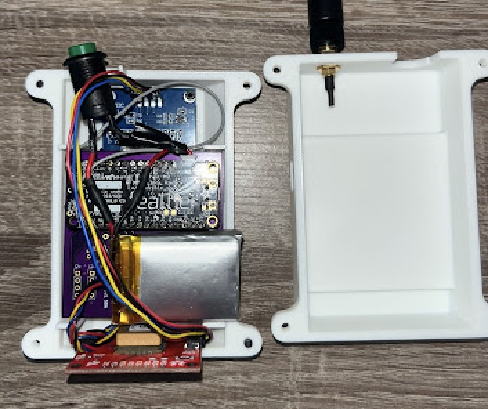

As part of my undergraduate degree in Mechanical Engineering at Cornell University, I completed MAE 4220: Introduction to Internet of Things Technology. The course introduced students to the design and implementation of Internet of Things (IoT) systems—networks of physical devices embedded with sensors and microcontrollers that collect, exchange, and act on data. Through hands-on projects, we used C++, Arduino microcontrollers, and I²C communication protocols to interface with various sensors and actuators. We also deployed data over The Things Network using LoRaWAN technology, exploring how long-range, low-power communication can enable community-scale IoT applications across Upstate New York.
Project
LoRaWAN Gateway Connections Map – Ithaca
For our final project, my team developed an improved LoRaWAN signal strength tracker to support community-driven smart city projects in Upstate New York. Working with partners from the City of Syracuse and Blueprint Geneva, we redesigned a previous LoRaWAN tracker to be more compact, weather-resistant, and user-friendly for non-technical volunteers. The device used an Arduino Feather board and an I²C bus to log GPS and signal data locally on an SD card while also transmitting it to The Things Network via LoRaWAN. Our design included an OLED display for real-time feedback, a simple D-pad interface, and all-day battery life. Through field testing around Ithaca, we confirmed reliable GPS and LoRaWAN connectivity across more than 26 square kilometers. The green dots on the map represent instances where the device successfully sent a signal ping to the gateway, confirming connectivity during our drive test. This project produced an open-source tool and documentation package that enables local governments and nonprofits to map network coverage and expand access to IoT infrastructure.
Field Testing Area – Ithaca Region
My Role

Inside View of Physical Prototype
I led the mechanical design for the device, creating the protective enclosure in Autodesk Inventor.
The casing was optimized for compactness and handheld use, with internal mounting features that secured
the circuitry and allowed for quick access to ports and interfaces during testing. I also refined the
enclosure geometry through several design iterations to improve assembly efficiency, weather resistance,
and overall durability in field conditions. Each prototype was evaluated for ergonomics and ease of use
to ensure the final device could be comfortably handled by volunteers during data collection.